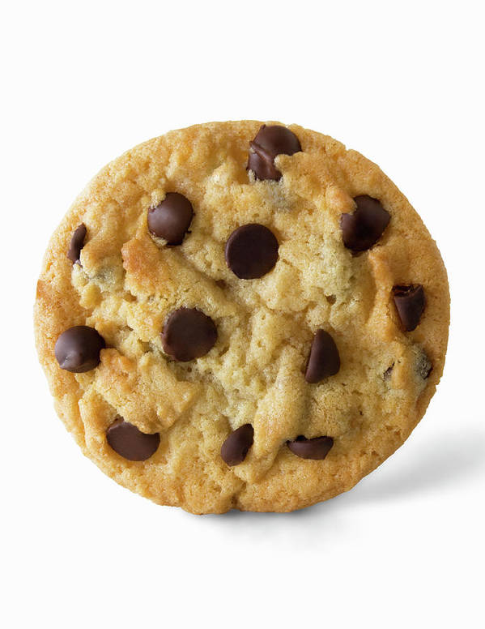

Shown below are two lists. The first shows the ingredients for chocolate chip cookies. The second shows the cooking steps.
This recipe was taken from the truvia website.
- 1 1/8 cups flour
- 1/2 tsp salt
- 1/2 cup (1 stick) butter, unsalted, softened
- 3/4 cup Truvia Sweet Complete Granulated All-Purpose Sweetener
- 1/2 tsp vanilla
- 1 large egg
- 1 cup (6 oz.) chocolate chips
- Preheat oven to 375° F.
- Combine flour, salt and baking soda in a small bowl./li>
- Beat butter, Truvia Sweet Complete® Granulated All-Purpose Sweetener and vanilla in a separate large mixing bowl. Mix in egg.
- Gradually stir in flour mixture. Stir in chocolate chips.
- Drop rounded tablespoon on cookie sheets and press down to slightly flatten.
- Bake for 12 to 15 minutes or until lightly browned.
